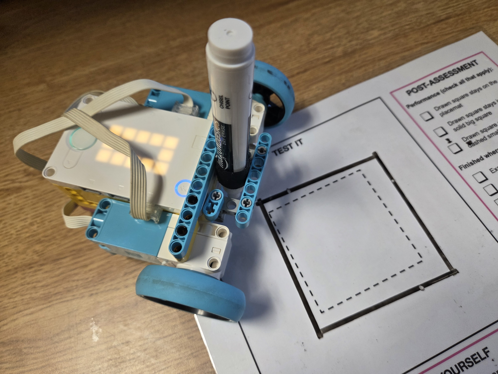
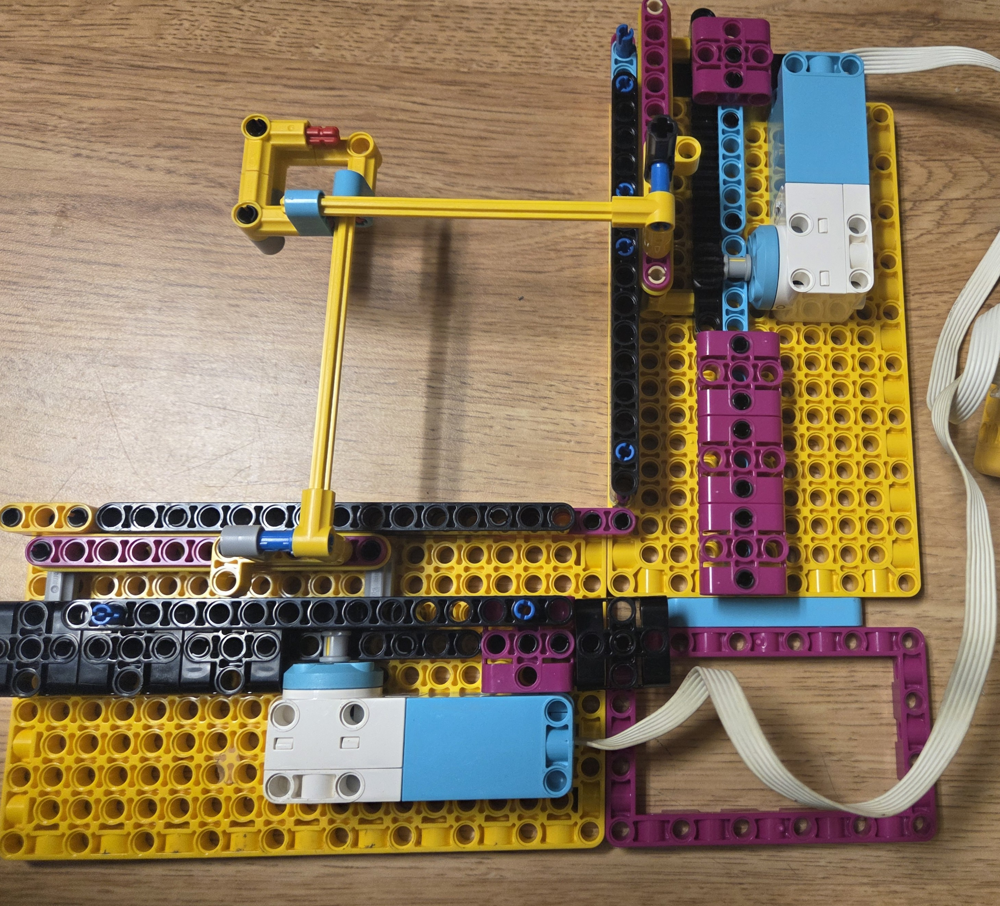
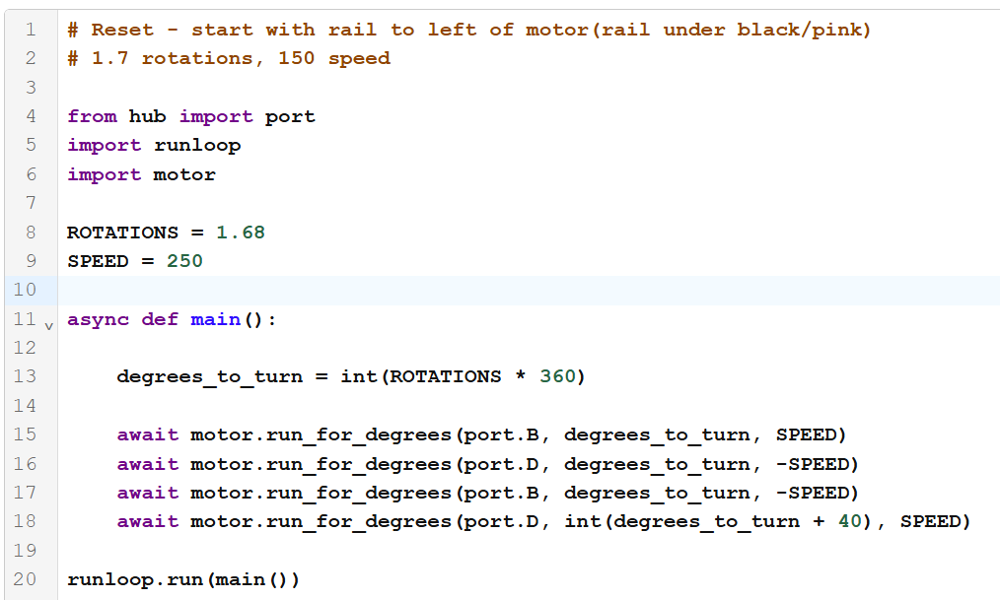
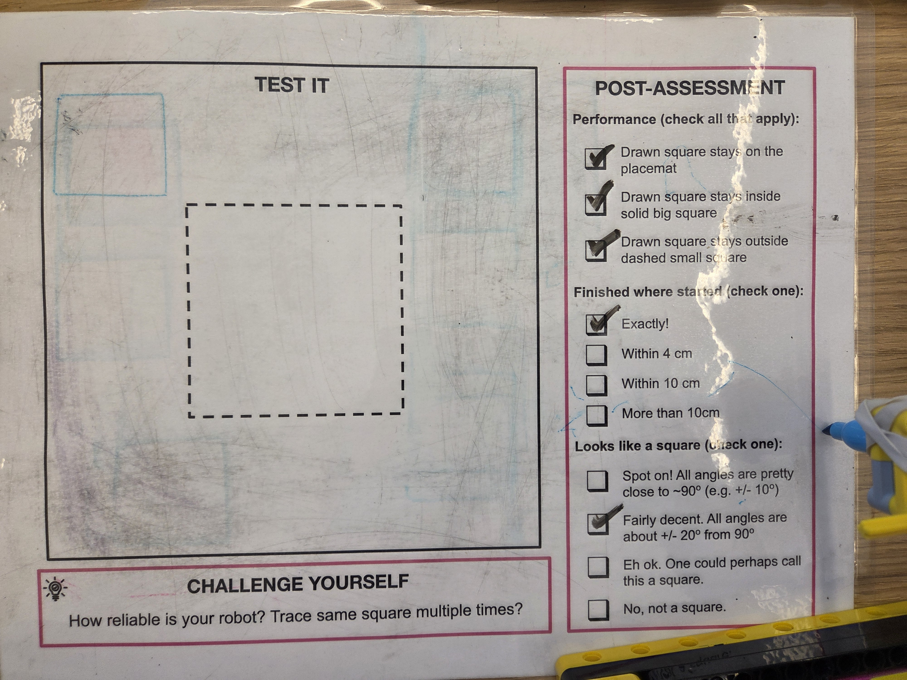
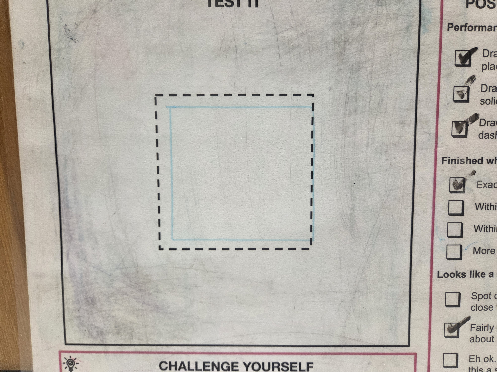
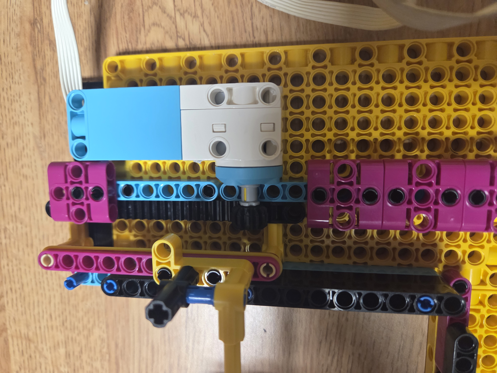

For this project, we were tasked with building a robot that could accurately draw a square. We then had one chance in class to draw the best square possible. My first approach was to build a car with a pen attached that drove in a square, which I got working pretty well. I wanted to get a bit more creative, so I decided to make an XY plotter. I used linear gears to turn the motors' rotation into X/Y motion.
One challenge was getting all the moving pieces to stay in place instead of wiggling or turning, using the specific LEGO bricks I had. To help with this, I added squares and walls to keep the linear gear in place. I also added rubber bands around the moving purple beams to minimize the space between them and the walls, and got creative with the Technic bricks I used to stop pieces from rotating. Another issue was getting straight lines and sharp corners because of the limited size and structural integrity of the LEGO axles. I redesigned the pen holder to be more structural and closer to the intersection of the axles. I also started in the furthest corner because that transition was the weakest.
Although I tried to get as big a square as possible with my design during practice, I drew a very small square for the in-class challenge to fit inside the constraints: staying inside the large square and outside the small square. My car was definitely more accurate, but I think I learned a lot more from this approach, and I'm glad I took the time to make it as good as possible.